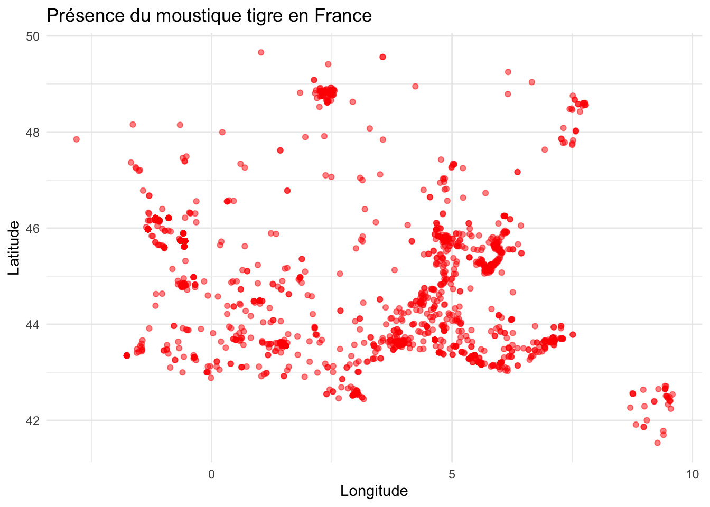
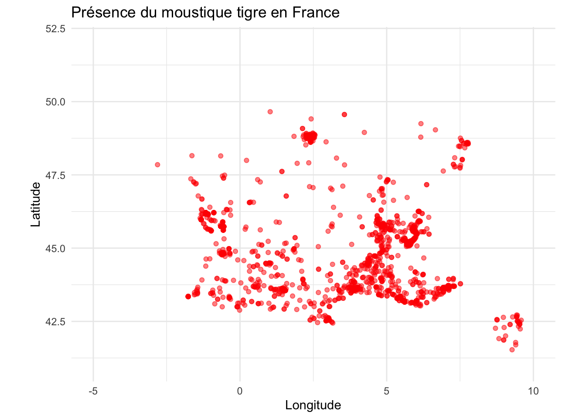
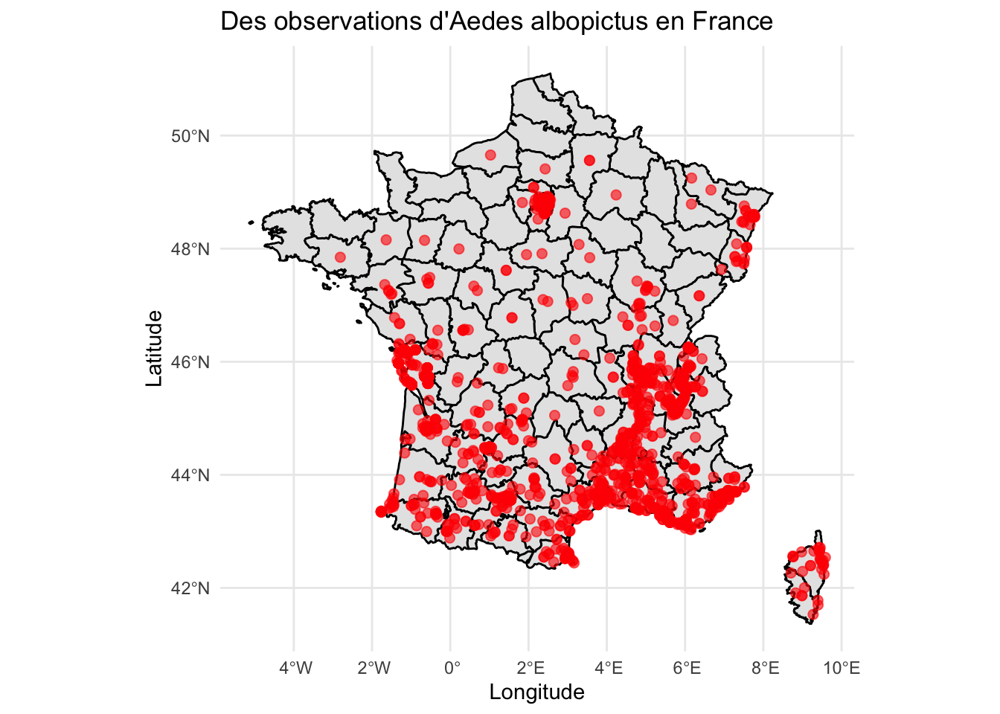
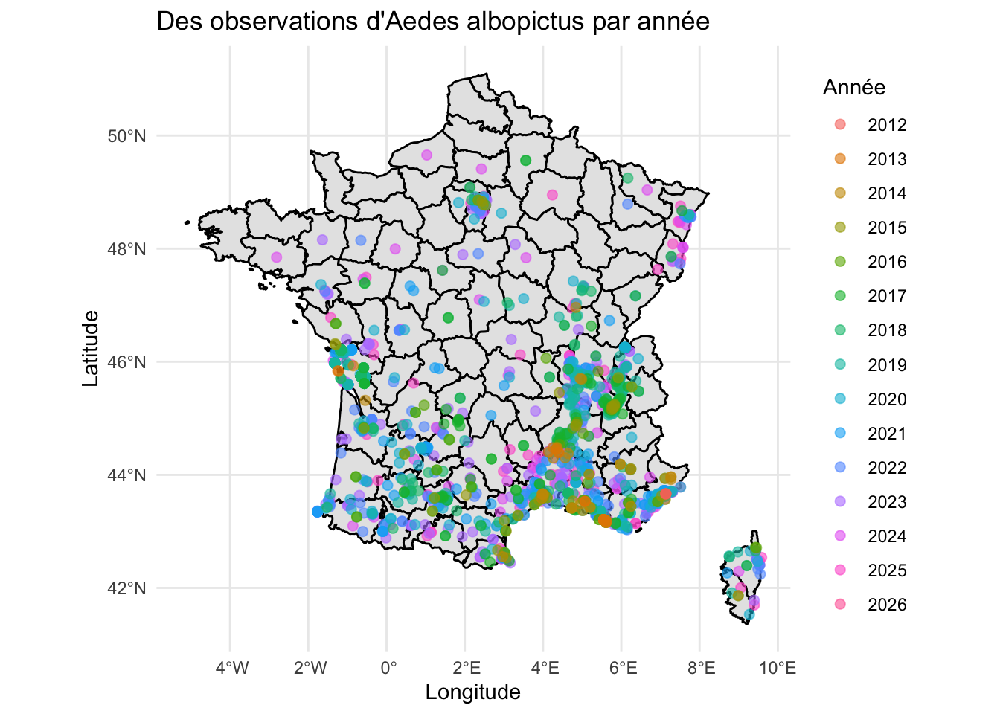

Il faut installer en R markdown les packages (ils sont déja installés dans Kaggle) install.packages(“rgbif”) install.packages(“dplyr”) install.packages(“sf”) install.packages(“maps”)
Code
library(rgbif)library(dplyr)
Attaching package: 'dplyr'
The following objects are masked from 'package:stats':
filter, lag
The following objects are masked from 'package:base':
intersect, setdiff, setequal, union
Code
library(sf)
Warning: package 'sf' was built under R version 4.5.2
Linking to GEOS 3.13.0, GDAL 3.8.5, PROJ 9.5.1; sf_use_s2() is TRUE
Chaque ligne correspond à un enregistrement de présence du moustique tigre.
Construire une table résumée contenant le nombre d’occurrences relevées pour chaque combinaison de la variable year et de la variable stateProvince. Autrement dit, on souhaite une table avec trois variables :
l’année
le site
le nombre d’occurrences relevées pour l’année et le site
Si tout s’est bien passé, vous devriez obtenir 84 observations.
22 → il y a 22 observations sans information sur l’année (year)
1380 → il y a 1380 observations sans information sur la région (stateProvince)
Code
summary_table <- tigre_moustique_data %>%filter(!is.na(year), !is.na(stateProvince)) %>%# On supprime toutes les observations où : year est manquant ou stateProvince est manquantgroup_by(year, stateProvince) %>%# On regroupe les données par année et par région. summarise(n_occurrences =n(), .groups ="drop") # Pour chaque couple (année, région) on compte le nombre d’observations.nrow(summary_table)
# une autre maniere pour afficher la table library(DT)datatable(summary_table)
1.3 Décrire en dessinant le graph
Faire une première description des données. Vous pourrez notamment utiliser les packages suivants :sf/maps/ggplot2
L’objectif est de représenter la répartition géographique des points d’observation en utilisant la latitude et la longitude de chaque site, telles qu’elles sont renseignées dans la base de données.
Code
library(ggplot2)options(repr.plot.width =12, repr.plot.height =8)ggplot(tigre_moustique_data, aes(x = decimalLongitude, y = decimalLatitude)) +geom_point(alpha =0.5, color ="red") +coord_fixed() +theme_minimal() +labs(title ="Présence du moustique tigre en France",x ="Longitude",y ="Latitude")
Warning: Removed 51 rows containing missing values or values outside the scale range
(`geom_point()`).

Ce graphique montre :
la distribution géographique des observations du moustique tigre en France. Mais ce n’est pas la version sans les points NA donc il faut faire comme suivant:
Code
options(repr.plot.width =12, repr.plot.height =8)tigre_moustique_data %>%filter(!is.na(decimalLatitude), !is.na(decimalLongitude)) %>%ggplot(aes(x = decimalLongitude, y = decimalLatitude)) +geom_point(alpha =0.5, color ="red") +coord_fixed(xlim =c(-5, 10), ylim =c(41, 52)) +theme_minimal() +labs(title ="Présence du moustique tigre en France",x ="Longitude",y ="Latitude")

Ce graphique permet de visualiser la distribution spatiale des observations du moustique tigre. On observe une concentration plus forte dans certaines régions, ce qui peut indiquer une implantation progressive de l’espèce.
Code
library(sf)library(ggplot2)library(maps)# enlever les lignes qui n'ont pas de coordonne options(repr.plot.width =12, repr.plot.height =8)spatial_data <- tigre_moustique_data %>%filter(!is.na(decimalLatitude), !is.na(decimalLongitude))spatial_sf <-st_as_sf( spatial_data,coords =c("decimalLongitude", "decimalLatitude"),crs =4326# CRS WGS84)france_map <-map_data("france")ggplot() +geom_polygon(data = france_map,aes(x = long, y = lat, group = group),fill ="gray90", color ="black" ) +geom_sf(data = spatial_sf,color ="red",size =2,alpha =0.6 ) +theme_minimal() +labs(title ="Des observations d'Aedes albopictus en France",x ="Longitude",y ="Latitude" )

Observation
Aedes albopictus (moustique tigre) est une espèce subtropicale / tropicale.
Température moyenne > 20°C → croissance rapide et reproduction efficace.
Dans le sud de la France (Provence-Alpes-Côte d’Azur, Occitanie…), les étés sont chauds et doux, avec une humidité modérée → conditions idéales pour le moustique.
Dans le nord, les étés sont plus courts et les températures plus basses → moins de moustiques.
Code
# Par annéeoptions(repr.plot.width =12, repr.plot.height =8)ggplot() +geom_polygon(data = france_map,aes(x = long, y = lat, group = group),fill ="gray90", color ="black" ) +geom_sf(data = spatial_sf,aes(color =factor(year)),size =2,alpha =0.6 ) +theme_minimal() +labs(title ="Des observations d'Aedes albopictus par année",color ="Année",x ="Longitude",y ="Latitude" )

Observation
D’après la carte, on observe que le moustique tigre semble progressivement se déplacer vers le nord, ce qui pourrait être lié aux changements climatiques.
L’augmentation des températures et la modification des conditions climatiques dans les régions septentrionales de la France créent désormais un environnement plus favorable à sa survie et à sa reproduction.
Code
df <- summary_tablelibrary(tidyverse)
Warning: package 'readr' was built under R version 4.5.2
── Attaching core tidyverse packages ──────────────────────── tidyverse 2.0.0 ──
✔ forcats 1.0.1 ✔ stringr 1.5.2
✔ lubridate 1.9.5 ✔ tibble 3.3.1
✔ purrr 1.2.1 ✔ tidyr 1.3.2
✔ readr 2.2.0
── Conflicts ────────────────────────────────────────── tidyverse_conflicts() ──
✖ dplyr::filter() masks stats::filter()
✖ dplyr::lag() masks stats::lag()
✖ purrr::map() masks maps::map()
ℹ Use the conflicted package (<http://conflicted.r-lib.org/>) to force all conflicts to become errors
Code
library(giscoR)
Warning: package 'giscoR' was built under R version 4.5.2
Code
occurrence_counts <- df %>%#filter(country == "FR") %>%group_by(stateProvince) %>%summarise(n =n()) # 2. Get the map (NUTS 2 regions)france_map <-gisco_get_nuts(country ="FR",nuts_level =2, resolution ="20")# 3. Join the datamap_data <- france_map %>%left_join(occurrence_counts, by =c("NAME_LATN"="stateProvince"))# 4. Create the plot with labelsggplot(data = map_data) +geom_sf(aes(fill = n)) +# Add text labels for each provincegeom_sf_text(aes(label = NAME_LATN), size =2.5, # Adjust text sizecolor ="black", # Color of the textcheck_overlap =TRUE, # Prevents labels from drawing over each otherfontface ="bold") +scale_fill_viridis_c(option ="plasma", na.value ="grey90", name ="Occurrences") +theme_minimal() +labs(title ="Occurrences by Province in France",subtitle ="With regional names attached",x ="Longitude", y ="Latitude" ) +# Zoom into mainland France (France métropolitaine)coord_sf(xlim =c(-5.5, 10), ylim =c(41, 51.5))
Warning in st_point_on_surface.sfc(sf::st_zm(x)): st_point_on_surface may not
give correct results for longitude/latitude data